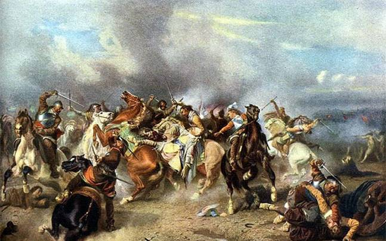

The First Battle of Panipat
The First Battle of Panipat, on 21 April 1526[1] was fought between the invading forces of Babur against Ibrahim Khan Lodi, the Sultan of Delhi, in North India. Babur's forces, employing gunpowder firearms and cannons, defeated Ibrahim. This was one of the earliest battles involving gunpowder arms on the Indian subcontinent. The victory marked the beginning of Mughal rule in India.

Details
In 1504, Babur succeeded his late uncle Ulugh Beg II by force of arms, taking control of the latter's
kingdom based around Kabul and Ghazni. Opposed by Muhammad Shaybani to the northwest, Babur sought to
expand his kingdom to the southeast, into Punjab, the land of the five rivers. By 1519, he had reach the
Chenab River.[3]
At that time, most of North India was part of the Delhi Sultanate, under rule of Ibrahim Lodi of the
Lodi dynasty. However, Ibrahim was locked in a power struggle with his relatives and ministers. Daulat
Khan Lodi, Governor of Punjab, offered to defect to Babur.[4] Babur started for Lahore, in 1524 but
found that Daulat had been driven out by forces sent by Ibrahim.[5] The Lodi army marched out to engage
Babur and was routed.[5] Babur also took control of Jhelum, Sialkot, Kalanaur and Dipalpur before
returning to Kabul. He placed Dipalpur under control of Alam Khan, a rebel uncle of Ibrahim.[6]
Video
Battle
Ibrahim's army is reported to have had an effective strength of between 50,000 and 70,000 with 1,000 war elephants but lacked gunpowder arms.[8][9][10] Babur's army was 12,000 strong. At least part of the force were equipped with matchlock muskets. His cavalry fought as horse archers. He also had between 15 and 20 cannon.[11]
Babur defended his position with 700 wagons tied together in a line. Between every second wagon was a breastwork for his musketeers to fire from. At several places in the line, he left sally points 150 riders wide for his cavalry to advance through. Babur secured his right flank against the city of Panipat. On the left, he dug a trench filled with branches as an obstacle against cavalry.[12] When Ibrahim attacked, the frontage presented by Babur was too narrow for him to effectively employ his force. Musket and cannon pinned Ibrahim's centre while horse archers harried the flanks and rear. The noise of cannon panicked the elephants, adding to the casualties. Ibrahim and 20,000 of his men were killed in the battle. Thousands more died as the army retreated

Aftermath
The battle of Panipat was militarily a decisive victory for Babur. However, to secure his position, Babur was still to fight the Mewar ruler Rana Sanga at Khanwa in 1527 and, the eastern Afghans at the Ghaghra River in 1529. Politically it gained Babur new lands and initiated a new phase of his establishment of the Mughal Empire in the heart of the Indian subcontinent an empire that lasted for over 200 years.